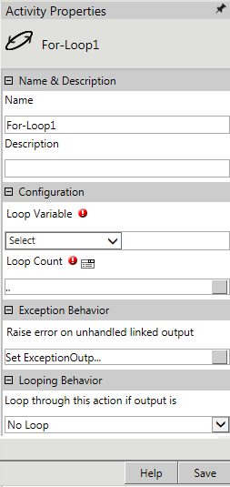

No
Action description:
The For-Loop Activity can be used to start a loop within a workflow. It is useful for repeated execution of an activity or group of activities. It must always be used along with the Next Loop Activity.
Activity Properties:
The For-Loop activity has to be configured by specifying appropriate values for the different properties in the Activity Properties area. The Activity Properties can be accessed by clicking on the Activity Properties tool in the Tool Bar or by selecting the appropriate option from the right click menu for the For-Loop activity. The Activity Properties are organized under the following groups of related properties. The properties under each group are described in this topic.

Name & Description
The properties in the Name & Description group have been described below. You can use these properties to specify the name and description for the activity.
Name - This property can be used to specify a name for the activity.
Property Type: Optional (This property needs to be set only if necessary.)
Description - This property specifies a brief description to be displayed for the activity.
Property Type: Optional (This property needs to be set only if necessary.)
Configuration
The properties in the Configuration group have been described below. You can use these properties to configure the functionality of the activity.
Loop Variable - This property allows the user to specify the variable to use as the counter for the loop. It can be selected from the drop down for this property. These variables should have been declared in the Start activity.
Property Type: Mandatory (This property must be set if the action is to be executed.)
Loop Count - This property allows the user to specify the loop count, which will determine the number of iterations of the loop.
Property Type: Mandatory (This property must be set if the action is to be executed.)
Steps to set the Loop Count property
See For - Loop Count for a detailed description of the Loop Count property window.
Looping Behavior
The property in the Looping Behavior group has been described below. You can use this property to specify the looping behavior of the activity.
Loop through this action if output is - This property is used to specify the condition for looping the activity by selecting an activity output from the drop down.
Property Type: Optional (This property needs to be set only if necessary.)
Activity outputs:
The For-Loop Activity returns the following values -
Step: Displayed to indicate the loop step
Loop End: Displayed when the end of the loop is reached
Variable Not Found: Displayed when the specified variable is not found
Invalid Count: Displayed when there is an invalid loop count
Exception Behavior
Each activity has the Raise Error on Unhandled Linked Output property on click of which, it shows all the default configured mapped error outputs in red with their check boxes selected.
See Mapped Error Outputs for more details.